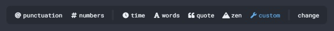
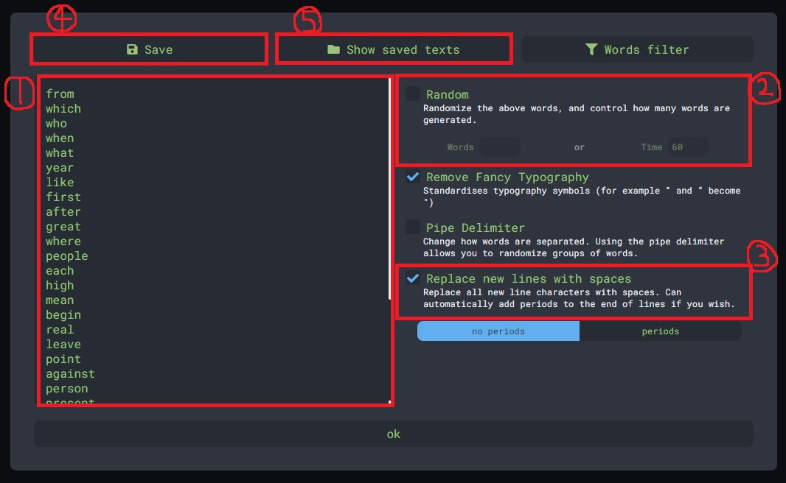

From the New World
monkeytypeを攻略する
1．ワードリストを入手する
monkeytypeのgithubページにアクセスします。
今回入手するのはランキングの対象になっている「english」というワードリストです。
以下の場所にあるので、ダウンロードするなりコピペするなりして入手してください。
┗ monkeytype / frontend / static / languages / english.json
2．単語ごとに分類する
僕の場合は、「練度が低い単語」「最適化の考慮の余地がある単語」「その他」の3つに分類しました。
「その他」のワードについては、最適化の余地がない、かつ、これ以上練度の上げようがない単語たちなので、今回の攻略対象からは外します。
※注意：ワードセットに「I（大文字）」が含まれていますが、出題されないので無視してよいです。
3．練度が低い単語を抽出する
今回抽出したのは以下の29単語です。分類ごとに見ていきます。
【巻き込みミスをしてしまうパターン（計10個）】
- great, each, mean, real, leave, head, lead, increase, early, year
dvorak配列は左手に「aoeui」の順で母音が並んでいます。
ここで、「ea」のアルペジオ打鍵を行うと、それなりの頻度で「eoa」と打鍵してしまい、巻き込みミスが発生しているのが現状です。
【最適化の練習が十分でないパターン（計9個）】
- which, who, when, what, where, like, begin, point, group
数週間ほど前に「wキー」を親指で打つという最適化を導入したのですが、
まだ日数が経っていず十分に指に染みついていないこともあり、たびたびミスしてしまっています。
その他の単語も、最近になって最適化を導入したものです。
【アルペジオ打鍵が甘い、左右交互が甘いパターン（計10個）】
- from, first, after, people, against, person, present, again, program, problem
これらは、いわゆる「何となく雰囲気で打ってた」みたいな感じの単語たちです。
アルペジオ打鍵がぎこちなく、それが原因でロスが発生していたり、左右交互が逆になったりすることがあります。
4．最適化の考慮の余地がある単語を抽出する
今回抽出したのは以下の5単語です。数も多くないので、一つ一つ見ていきます。
・you …… yを右人差し指で打鍵する
・high …… ghを右中指→右人差し指で打鍵する
・possible …… pを左中指で打鍵する
・play …… pを左中指で打鍵する
・keep …… eを左薬指→pを左中指で打鍵する
現時点ではあくまで「考慮の余地がある」単語なだけで、実際に最適化するかは未定です。
それでは、具体的にどの単語を最適化し、どの単語は最適化しないでおくか、決めていきます。
・you …… yを右人差し指で取ることはしない、と決めているのでスルー
・high …… 新たに最適化する！
・possible …… 最適化の恩恵が少ないので、スルー
・play …… 最適化の恩恵が少ないので、スルー
・keep …… リスクが高いので、スルー
5．練習が必要な単語をmonkeytypeのcustom機能に登録する
monkeytypeには自分で単語や文章を設定して練習できる「custom」モードがあるので、
今回はそれを使って練習していきます。

メニューから「custom」を選ぶと「custom」モードになり、「change」を押すと設定画面が開きます。

【設定項目の説明】
1．出題したい単語（文章）を貼り付けます
2．単語をランダムに出題したい場合は、このRandomにチェックを入れ、出題形式（ワード数or秒数）を指定します
3．1で改行区切りで貼り付けた場合、ここにチェックを入れることで自動的にスペース区切りに変換してくれます
4．現在のワードセットを名前付きで保存します
5．保存したワードセットを呼び出します
6．あとはひたすら練習すべし！
～wpmが出るまで練習するなど、目標を決めて練習するのもよいと思います。
- Top Page -